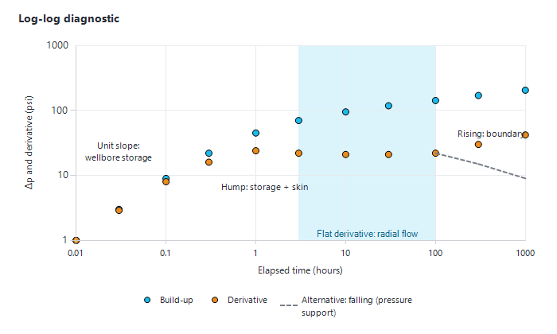

|
Build-up and pressure transient analysis (PTA)
1. Overview
Every time a producer with a downhole gauge is shut in, its BHP builds up towards the reservoir pressure. The Producers dashboard turns these unplanned build-ups into information, in two steps:
•the Build-up Analyzer extrapolates the build-up to estimate the reservoir pressure at datum, and can save it;
•the PTA window shows the diagnostic plots of the build-up (log-log pressure and derivative, superposition plot), and can save the analysis so that all build-ups of a well can be compared later.
Both are in the "Reservoir Monitoring" group of the Producers dashboard ribbon: "Build-up Analyzer" and "View All Build-ups".
2. Build-up Analyzer — reservoir pressure from a build-up
2.1 Before you start
•The well needs a datum depth in the asset model, otherwise Precept shows "Datum needs to be defined !".
•The depth of the downhole gauge should be in the well's completion data, so that the gauge pressure can be corrected to datum. Without it, Precept warns you and applies no hydrostatic correction.
2.2 Steps
1.Select the well, then click "Build-up Analyzer". The "Pressure Database" panel appears and the main chart shows the "Production period" and "Build-up" bands.
2.On the main chart, drag across the build-up, starting at the shut-in. On real-time assets, Precept reloads the high-frequency BHP for that window; otherwise it uses the daily BHP.
3.Precept fits the shut-in pressures with P(SI) = a + b × ln(Δt), Δt in hours since shut-in (label "P (SI) = a + b log (dt)"), and draws the "BU extrapolation" line. Adjust "a" and "b" with the sliders if needed.
4.Read the results: "BHP 90 days:" (the extrapolated gauge pressure after 90 days of shut-in), "Hydrostatic between BHP and Datum:" and "Datum Reservoir pressure at 90 days:" (BHP at 90 days + hydrostatic correction). The datum pressure is plotted as a "Reservoir pressure" point.
5.The PTA window opens with the selected build-up (section 3). Close it to come back to the dashboard.
6.Click "Save Reservoir pressure" to store the datum and gauge pressures, dated at the start of the build-up. Saved pressures appear with the "Reservoir pressure" tick on the well charts and are used by the Material Balance history match.
If the pressures do not follow a clean build-up, Precept shows "Precept cannot extrapolate the pressure. Fall-off is not clean enough !". Select a cleaner window, or a longer shut-in.
The 90-day extrapolation is a practical estimate of the average drainage pressure, not a full PTA interpretation. It is reliable when the build-up has reached radial flow (straight line on the semi-log plot) and the well is not strongly bounded.
3. The PTA window
The window "PTA" opens after a build-up selection in the Build-up Analyzer. If the selected period contains a build-up that was already saved, the saved analysis is replayed and the title becomes "PTA - <well> (saved analysis <date>)".
3.1 Data and build-up detection
•Pressure — the BHP selected in the Producers dashboard (high-frequency when available, otherwise daily).
•Rates — the daily allocated oil rate and uptime before the shut-in.
•Build-up detection — Precept finds the shut-in from the pressure shape: the start is the lowest BHP after which the next three points keep rising; the end is the highest BHP after which the next three points keep falling (or the end of the data). Single-point gauge dropouts are ignored.
3.2 Calculations
•Δt — hours since shut-in; Δp = BHP − Pwf, where Pwf is the BHP at shut-in.
•Producing time tp — the sum of the daily producing hours (24 × uptime) before the shut-in; q_last — the last positive daily oil rate before the shut-in.
•Superposition function — the multi-rate (generalised Horner) time function built from the daily rate history: Σ (q_j − q_j−1)/q_last × log((tp − t_j−1) + Δt) − log(Δt). For a constant rate it reduces to the Horner time log((tp + Δt)/Δt).
•Derivative — the slope of Δp against the superposition function, computed with neighbours at least 0.1 log-cycle apart to limit noise.
3.3 Charts
•"Log-log diagnostic" — "Build-up" (Δp) and "Derivative" against "Elapsed time (hours)", both axes logarithmic.
•"Superposition (Horner)" — BHP ("Pressure") against the "Superposition function". The X axis starts at 0: extending the straight part of the curve to 0 gives the extrapolated pressure p* by eye.
•"Production history" — BHP and oil rate (right axis) around the build-up, with the analysed period shaded and labelled "Build-up analysed".

Figure 1 — Reading the log-log diagnostic: a unit slope at early time (wellbore storage), a hump, then a flat derivative during radial flow; a rising derivative at late time points to a boundary, a falling one to pressure support.
The PTA window is a visual diagnostic. It does not ask for fluid and rock properties and does not calculate permeability-thickness or skin. Use it to check that a build-up reached radial flow before trusting its extrapolated pressure, to spot boundaries or support, and to compare build-ups over time.
3.4 Adjusting the build-up window
•Type the "BU start" and "BU end" dates and times, or click "Pick BU on chart" and then click the start and the end on the "Production history" chart (the button text guides you; click it again to cancel). Picks snap to the nearest pressure point; the picked window shows as a blue strip.
•Click "Recalculate PTA". Precept checks the window: the end must be after the start, at least 3 pressure points are needed, and the window must not include a drawdown ("Drawdown is included in the BU analysis. Adjust the BU start/end dates to cover only the build-up.").
3.5 Ribbon buttons
•"Save" — saves the analysis (Δt, superposition function, Δp, derivative, shut-in date, q_last, Pwf). A previous analysis of the same build-up (within 2 days) is replaced.
•"Production parameters" — the pressure and rate data plotted, as a table.
•"PTA" — the calculated PTA table.
The chart gestures are those of the Monitoring module (section 4); the "Format chart" dialog is available on the superposition chart.
4. View All Build-ups — comparing build-ups over time
Select a well and click "View All Build-ups". If the well has no saved analysis, Precept shows "No saved build-up analyses found for <well> .". Otherwise the window "PTA — All build-ups (<well>)" opens, read-only:
•"Log-log diagnostic — all build-ups (rate-normalised)" — Δp/q and derivative/q of every saved build-up, one colour per build-up (the derivative in a lighter shade), labelled with the build-up date. Dividing by the rate before shut-in makes build-ups at different rates comparable.
•History chart — the BHP over the whole period, with one coloured strip per analysed build-up.
•Click a point of a build-up on the log-log chart to highlight its strip on the history chart; click an empty area to reset.
How to read it: if the radial-flow level of the normalised derivative rises from one build-up to the next, the well's flow capacity is decreasing; if the curves shift upward at early time, the near-wellbore damage (skin) is increasing. Both are candidates for a stimulation or a well-model update.
|